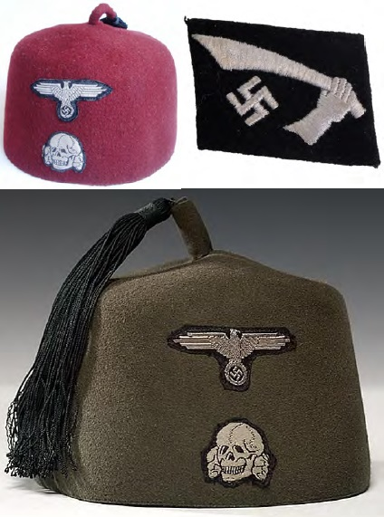

« L’histoire est écrite par les vainqueurs » a-t-on coutume de dire. Il serait plus juste de dire qu’elle est souvent écrite par des personnes qui, se réclamant des vainqueurs, utilisent partialement des faits historiques passés pour justifier, cautionner ou mettre en valeur leurs actions présentes sous couvert du « devoir de mémoire ». Cela ne va naturellement pas sans raccourcis infondés, déformations des faits et anachronismes divers et variés. La vision qui ressort des événements traités de cette façon se retrouve ainsi totalement faussée mais, par la force des commémorations officielles et des médias, généralement acceptée comme vérité historique. L’exemple de la mutinerie qui eut lieu à Villefranche-de-Rouergue au sein d’une unité de génie de la 13e Division SS de Montagne le met en exergue de façon particulièrement significative.
1/ LA CRÉATION DE LA 13E DIVISION SS DE MONTAGNE
En 1943, après les défaites d’El Alamein et de Stalingrad, les armées du IIIe Reich avaient besoin de toujours plus de soldats. La Wehrmacht se réservant la plupart des recrues allemandes, la Waffen SS, branche militaire de la SS, avait dès le début de la guerre commencé à se tourner vers les pays alliés et occupés pour se procurer les hommes qui lui étaient nécessaires, aussi poursuivit-elle son action dans ce sens.
Dans l’orbite allemande se trouvait l’Etat Indépendant de Croatie. Celui-ci, créé en 1941 sur les décombres du royaume de Yougoslavie envahi par les forces de l’Axe, était loin d’être homogène : comprenant une grande partie de la Croatie actuelle, il englobait toute la Bosnie-Herzégovine ainsi que des territoires pris à la Serbie, ce qui faisait que, sur une population de 6 à 7 millions d’habitants, on comptait un tiers de Serbes et 750 000 Bosniaques musulmans à côté d’une majorité de Croates.
Cet État était aux mains du parti des Oustachis qui, ultra-catholiques, s’en prenaient violemment aux Orthodoxes, principalement serbes, et à ses opposants ; cette politique entraîna l’émergence de puissants mouvements de résistance communistes et monarchistes.
Quant aux Bosniaques musulmans, leur situation était délicate car floue : accusés d’un côté par les milices résistantes d’appuyer l’État croate, ils étaient de l’autre considérés par les Oustachis comme collaborateurs de ces mêmes milices. Pris entre deux feux, ils étaient en butte aux violences des uns et des autres et, en 1943, 100 000 d’entre eux avaient déjà été tués.
Des responsables bosniaques se tournèrent alors vers les Allemands pour demander leur protection et trouvèrent une oreille attentive auprès d’Himmler, chef de la SS : en créant sous commandement allemand une unité SS bosniaque chargée de lutter contre les partisans dans les Balkans, il pourrait non seulement libérer les régiments allemands affectés à cette tâche, mais aussi augmenter les effectifs de la Waffen SS et donc son poids au sein de l’appareil national-socialiste.
Adolf Hitler entérina la proposition d’Himmler de créer une nouvelle division de Waffen SS dont le recrutement se ferait au sein de la population musulmane de Bosnie. Le projet était appuyé par le Grand Mufti de Jérusalem, mais l’État croate y était opposé, pensant qu’il pourrait favoriser l’émergence d’un séparatisme bosniaque. Les Allemands firent peu de cas de l’avis de leur allié et lancèrent une campagne de recrutement ciblant la population musulmane.
Cette composition spécifique de l’unité en formation amena une nouveauté dans la Waffen SS, où l’on faisait peu de cas de la religion : des imams et des mollahs furent en effet incorporés pour assurer l’encadrement religieux des recrues, qui furent autorisées à suivre les préceptes du Coran, à savoir faire les cinq prières quotidiennes et être nourries de mets sans porc.
Pour marquer visiblement sa particularité, la division reçut quelques attributs spécifiques sur son uniforme : sur le col de la vareuse, à la place des lettres SS habituelles, les écussons furent ornés d’un cimeterre (Handschar, qui deviendra plus tard le nom de l’unité) et d’un svastika, tandis que le fez, marqué de l’aigle et de la tête de mort de la SS, devint la coiffure réglementaire.
2/ LE RECRUTEMENT DES SOLDATS
Le Grand Mufti de Jérusalem vint en Bosnie en avril 1943 pour convaincre ses coreligionnaires bosniaques de s’engager dans la nouvelle unité. Il se révéla convainquant : 10 000 volontaires se présentèrent rapidement aux bureaux de recrutement. Cet important afflux ne se maintint cependant pas, notamment du fait que l’État croate multipliait les obstructions.
Le Grand Mufti de Jérusalem passant en revue les volontaires SS bosniaques
Himmler finit par obtenir la collaboration de l’État croate et, tout en poursuivant les efforts auprès des Bosniaques, on autorisa l’enrôlement de 2800 volontaires catholiques. Malgré cela, les engagements restèrent limités et l’on profita du rétablissement de la conscription par l’Etat croate pour combler les manques. Des volontaires albanais du nord furent également enrôlés, mais tous ces expédients ne permirent pas à la division d’atteindre la taille prévue car ses effectifs stagnèrent à moins de 20 000 hommes.
En ce qui concernait l’encadrement, il devait théoriquement être assuré par des officiers et sous-officiers bosniaques. En fait, la plupart d’entre eux étaient de rang subalterne et, pour combler les manques, on décida de prélever des cadres servant dans la 7e Division SS de Montagne : celle-ci était composée de volontaires eux aussi originaires de l’ancienne Yougoslavie, mais appartenant aux minorités ethniques allemandes qui y étaient installées ; leur connaissance de la langue serbo-croate et de la mentalité des volontaires bosniaques était censée faciliter leur commandement.
Le chef de la nouvelle division était le SS-standartenführer (colonel) Herbert von Obwurser, un Autrichien de 55 ans. Son unité était quelque peu disparate : si elle comprenait une majorité de Bosniaques musulmans avant tout soucieux de se battre pour protéger leurs compatriotes dans un contexte plus ou moins autonomiste, elle comptait aussi une forte minorité d’Oustachis, croates nationalistes et catholiques, tandis que l’encadrement, même s’il était en grande partie originaire des Balkans, il restait avant tout allemand et d’idéologie Waffen SS traditionnelle, plus ou moins imperméable aux spécificités des hommes du rang qui lui étaient confiés.
Afin de donner de la cohésion à la nouvelle Division de Montagne de Volontaires SS Croates, d’éviter les désertions et les attaques dont elle pourrait être l’objet, il fut décidé de l’éloigner des Balkans et de l’envoyer faire son entraînement en France occupée, dans le Massif Central où le relief était adapté.
Le transfert eut lieu durant le mois de juillet 1943, à la fin duquel les différentes unités avaient rejoints leurs cantonnements et notamment, en ce qui concerne le bataillon du génie, SS-Gebirgs-Pionier-Bataillon 13, Villefranche-de-Rouergue.
Soldats de la 13e Division de Volontaires SS Croates
SS bosniaques à l'entraînement
�
3/ LA MUTINERIE DE VILLEFRANCHE
L’autorisation donnée et appuyée par Himmler de permettre aux volontaires bosniaques de pratiquer leur culte avait entraîné l’incompréhension et même l’hostilité de l’encadrement d’origine germanique. L’exemple venait d’en haut car le commandant de la division ne faisait preuve d’aucune considération pour ses hommes. Himmler ne resta pas sans réagir et le démit de ses fonctions tandis qu’il fut rappelé à l’encadrement qu’« on devait garantir à tous les membres musulmans des Waffen-SS (…) le droit indiscutable, prévu par leur religion, de ne pas manger de viande de porc et de ne pas boire d’alcool (…) » ; il ne fallait pas que « par la stupidité et l’étroitesse d’esprit de quelques individus isolés, un seul de ces héroïques volontaires eut à ressentir une gêne et à se croire privé des droits qui leur ont été assurés ». Le climat changea lorsque le nouveau chef de la division, le général Sauberzweig, prit ses fonctions début août 1943 : bien plus que ses excellents états de service, c’est son attitude bienveillante à l’égard de ses SS bosniaques qui marqua.
La sollicitude du divisionnaire avait cependant pour limite les exigences et la dureté de l’entraînement en vigueur dans la Waffen SS. Au bataillon du génie de Villefranche-de-Rouergue comme dans les autres unités, les cadres, vétérans des combats de partisans ou du front russe, menaient les recrues sur un rythme infernal, hurlant les ordres et punissant les manquements de châtiments corporels. Ces conditions d’entraînement suscitèrent semble-t-il le mécontentement des hommes au sein du bataillon de génie, mécontentement peut-être exacerbé par des rumeurs faisant état de l’envoi de la division sur le front russe.
Le bataillon de génie avait été infiltré par des éléments communistes et, parmi eux, se trouvait le SS-untersturmführer (sous-lieutenant) Farid Dzanic, 25 ans ; ce Bosniaque musulman, formé par les partisans de Tito, occupait un poste de chef de section à la 1e compagnie. Il avait avec lui deux camarades : le SS-hauptschaführer (adjudant-chef) Eduard Matutinovic, un Croate de 20 ans commandant le train de combat de la 5e compagnie, ainsi que le SS-oberscharführer (adjudant) Lutfija Dizdarevic, un Bosniaque musulman âgé de 22 ans. Unis face au même ennemi, ils avaient réussi à entraîner avec eux le SS-oberjunker (aspirant) Nicola Vukelic, un Croate catholique au nationalisme exacerbé de 19 ans. Ces quatre hommes représentaient ainsi les différents courants de leur pays opposés aux Allemands, à l’exception des Serbes. Ils avaient le projet de soulever leur bataillon et d’en prendre le contrôle pour lui faire rejoindre les maquis français, avec qui ils avaient pris contact, voire même les alliés anglo-américains. Ils travaillaient les hommes en mettant en exergue la promesse non tenue par les Allemands de ne pas les faire combattre hors de Bosnie et dénonçaient les humiliations faites par les officiers d’origine germanique. On ne sait quel impact avaient ces arguments, mais les soldats savaient qu’ils n’étaient en France que pour s’entraîner, tandis qu’il leur apparaissait peut-être normal que les cadres soient très durs à l’entraînement : la waffen SS était encore une troupe d’élite à cette époque. En revanche, la connaissance de deux massacres commis en Bosnie par la 7e division SS les troubla sans doute beaucoup plus.
Farid Dzanic et ses trois compagnons conspirateurs avaient réuni un certain nombre de fidèles autour d’eux. Craignant que leur complot soit découvert, ils se décidèrent à agir dans la nuit du 16 au 17 septembre : à minuit, ils lancèrent leur opération et une dizaine de mutins conduits par Matutinovic et Vukelic pénétrèrent dans l’hôtel Moderne où ils capturèrent les cinq officiers de l’état-major du bataillon, tous des allemands ethniques originaires des Balkans ; ils les abattirent une heure plus tard. Durant le même temps, le reste des mutins s’empara des points clés de la ville, avec gendarmerie, poste et gare.
Le docteur Schweiger, médecin du bataillon mais appartenant à la Lufwaffe, avait quant à lui été enfermé sous bonne garde avec l’imam de l’unité, Halim Malkoc ; un certain désordre régnait chez les mutins et, bientôt, leurs gardiens disparurent. Les deux captifs décidèrent alors de contrer la mutinerie : l’imam courut jusqu’à la 1e compagnie, dont il trouva les cadres d’origine germanique prisonniers et enfermés tandis que les hommes de troupe étaient équipés et prêts au combat ; il se lança alors dans une harangue, leur expliqua la situation à et les enjoignit à rester fidèle à leur engagement. Il les convainquit aisément, prit leur commandement et fit libérer les Allemands. De son côté, le docteur Schweiger rallia les SS de la 20e compagnie, lui aussi sans grande difficulté.
A partir de quatre heures, tout alla très vite. Les troupes prirent les points clés aux mutins tandis que celles de Schweiger leur donnaient la chasse dans les rues de Villefranche. A huit heures, les SS loyalistes avaient déjà la situation bien en main. Même si le ratissage de la ville se poursuivit durant la matinée, tout était fini lorsque les renforts envoyés par la division arrivèrent de Mende et de Rodez, à 14 heures ; la ville était bouclée et l’enquête pouvait commencer.
Sur les 950 hommes que comptait le bataillon, il semble que les meneurs ne purent en convaincre plus de 150 à les suivre jusqu’au bout, les autres étant soit prudemment expectatifs, soit opposés au projet. L’attitude de la 1e compagnie montre par ailleurs la fragilité des motivations de ceux qui suivirent, alors que c’était celle où servait Farid Dzanic, le principal meneur : si les hommes se préparèrent à l’action et enfermèrent leurs cadres germaniques, la seule harangue de l’imam Malkoc suffit à les faire rentrer dans les rangs.
Le PC du bataillon où furent exécutés les officiers allemands
Les combats de la nuit firent entre une vingtaine et une quarantaine de morts, tandis que quelques mutins arrivèrent à s’enfuir. Au final, il apparaît que le coup de force tenté par une poignée d’éléments infiltrés fut facilement réprimé par plus des huit dixièmes des soldats du bataillon qui, privés d’officiers, se rangèrent résolument derrière un médecin de l’armée de l’air et un simple aumônier pour faire revenir l’ordre. Leur attitude est aisée à comprendre : la plupart d’entre eux s’étaient engagés dans le but de protéger leurs familles des exactions des partisans communistes et des oustachis nationalistes catholiques, aussi ne pouvaient-ils pas suivre une mutinerie menées par ces derniers contre l’autorité allemande qui, seule, leur avait offert une aide militaire.
Les mutins capturés furent immédiatement passés en cour martiale : parmi eux, 18 furent condamnés à mort et fusillés, tandis qu’une quinzaine reçurent des peines de travaux forcés ou de prison. Suite à l’événement, des enquêtes furent menées dans toute la division et 825 hommes furent jugés impropres au service et envoyés en Allemagne pour travailler comme civils au sein de l’Organisation Todt ; les 265 qui refusèrent cette mesure furent enfermés en camp de concentration.
En ce qui concerne la population civile, elle resta cloitrée à l’abri des balles pendant les événements. Si, le 17 dans l’après-midi, quelques personnes furent arrêtées par les SS loyalistes, elles furent rapidement libérées sur l’intervention du maire, qui fut lui-même retenu une heure durant pendant la soirée. Il en fut de même pour les gendarmes, désarmés, jusqu’au lendemain midi. La loi martiale, décrétée dans la nuit du 17 au 18, fut levée au bout de 24 heures seulement : la population n’avait rien à se reprocher et le commandement allemand ne souhaitait pas faire de publicité à la mutinerie, la première du genre dans la Waffen SS.
4/ LE TRAITEMENT MÉMORIEL DE LA MUTINERIE
Par sa durée réduite et son ampleur limitée, la mutinerie de quelques SS du bataillon de Villefranche reste un événement historique mineur. Cela n’empêcha pas certaines autorités de l’utiliser et de le déformer à des fins politiques diverses.
Tout d’abord, pour que l’histoire puisse être mise en valeur, il fallait des « bons » et des « mauvais ». Or, le bataillon étant entièrement composée de SS, il était difficile d’y trouver des « bons »…
Fort heureusement, il s’agissait d’une unité où des Bosniaques et des Croates composaient l’essentiel de la troupe tandis que les officiers supérieurs et les spécialistes étaient d’ethnie allemande : dès 1945, un rapport français sur l’affaire montre qu’il fut choisi d’appeler « SS » uniquement ces derniers, les autres devenant de simples « Croates » ; de là , le qualificatif SS fut ensuite étendu aux troupes fidèles qui avaient réprimé la mutinerie, de façon à ce que lorsque l’on lit ce rapport et ceux qui suivirent, l’impression qui ressort est que les mutins croates furent massacrés par des SS tous allemands. Un dossier de presse de l’ambassade de Croatie en France affirme même que c’est des « troupes nazies » venues de Rodez qui réprimèrent la révolte du bataillon.
L’artifice était cependant un peu léger et la question « que faisaient ces Croates dans la Waffen SS ? » risquait toujours de surgir. Il fallut trouver une bonne raison, simple et n’appelant aucune justification : malgré le fait que les SS bosniaques et croates étaient pour une large majorité volontaires, et conscrits pour les autres, on les décréta « enrôlés de force ». Par qui, pourquoi, peu importait. La chose est désormais gravée dans le marbre : autorités, journalistes et associations ne parlent désormais plus que d’enrôlés, ou mobilisés « de force dans les unités de la SS ».
Quant au nombre des mutins, il fallait qu’il gonfle un peu et, d’un coup, on décida que c’était le bataillon entier qui s’était soulevé : sur son site, la mairie de Villefranche-de-Rouergue parle ainsi, par exemple, de la « révolte (…) d’un bataillon de jeunes recrues (…) enrôlées de force par les Nazis ».
Enfin, il fallait éclairer la mutinerie d’un idéal dépassant quelque peu le cadre politico-religieux spécifique de l’Etat Indépendant de Croatie auquel les Français n’entendaient rien. Une motivation plus universelle était nécessaire : selon le site web de l’ambassade de France en Croatie, il s’agissait de se « libérer de l’asservissement », motif simple et facile à comprendre que l’on retrouve évoqué un peu partout.
On pourrait multiplier les exemples à l’envie, mais tous ne feraient que renforcer l’image que l’on veut donner de l’événement : la mutinerie d’un bataillon entier de jeunes Croates et Bosniaques qui, enrôlés de force dans la Waffen SS, voulurent briser leurs fers ; leur révolte fut noyée dans le sang par de « vrais » SS allemands, qui les fusillèrent ou les déportèrent en camp de concentration. La fable a bien servi : dès 1950, le gouvernement communiste yougoslave prit l’histoire à son compte et fit édifier un monument avec une plaque frappée de l’étoile rouge à l’emplacement du « champ des martyrs », lieu où furent fusillés et enterrés les mutins condamnés par la cour martiale ; il s’agissait de monter que la Yougoslavie communiste de Tito avait lutté partout contre l’oppresseur nazi. Le gouvernement français ne fut pas en reste et, en 2006, un nouveau monument fut construit. Inauguré en grande pompe et, « afin d’être tout à fait fidèle à la vérité historique », précise le dossier de presse, il porte l’inscription : « aux martyrs combattant pour la liberté qui s’insurgèrent contre le nazisme ».
Quant à la ville de Villefranche-de-Rouergue, l’événement fit dire à certains qu’elle avait été, durant une journée, « la première ville libérée de la France occupée ». Il faut croire qu’il ne s’agissait pas de rester modeste… La modestie ne fut pas plus de mise pour le nouveau monument, qui coûta la bagatelle de 372 532,54 €, dont 144 142,54 € payés par les contribuables de la commune.
Monument édifié au Champ des Martyrs par la république Yougoslave en 1950
CONCLUSION
On ne peut remettre en cause le courage de Farid Dzanic et de ses compagnons. Il reste que la mutinerie qu’ils avaient fomentée n’avait sans doute aucune chance de réussir : ils n’arrivèrent à convaincre qu’assez peu de leurs camarades, tandis que l’écrasante majorité du bataillon préféra rester fidèle à la Waffen SS et se ranger derrière deux non-combattants, le médecin allemand et l’imam de l’unité, pour faire cesser leur sédition.
Le reste de l’histoire est celui de toutes les mutineries dans toutes les armées du monde : cour martiale, condamnations, exécutions, etc. Le traitement mémoriel de l’événement est quant à lui moins net. Inventant une nouvelle histoire à coup d’exagérations et de contre-vérités, on a transformé la démonstration de fidélité à leur engagement de la majorité des soldats du bataillon en une preuve de leur insoumission. Nul doute que, du fond de leur tombe du « champ des martyrs », les mutins communistes et nationalistes qui ont péri sous les balles de leurs compatriotes SS doivent apprécier…
N.S.
RÉFÉRENCES :
Parmi les nombreux documents en source ouverte utilisés, nous pouvons notamment mentionner :
-Archives Nationales, 72 AJ 46, dossier n° 4, pièce 6 b, rapport du LCL Pavelet.
-Magazine l’Histoire no 219 (mars 1998), p. 47-50.
-Dossier de presse conjoint Ambassade de Croatie en France et Mairie de Villefranche-de-Rouergue pour l’inauguration du Parc-Mémorial pour les Révoltés de Villefranche-de-Rouergue (Aveyron).
-Ouvrages notés en en références sur les pages Wikipédia en anglais et en croate concernant la 13e Division SS Handschar.
Partager cette page